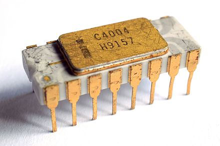
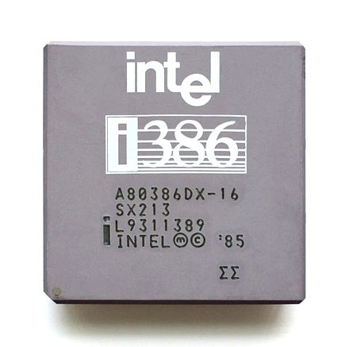

Introduction
-
Intel 4004 (1971)
Keywords: 2300 transistors,
740 kHz, 8 clock cycles / machine cycle, Instruction execution time 1 or 2 machine cycles (10.8 or 21.6 µs), 46250 to 92500 instructions per second
4-bit bus: 12-bit address (4096 bytes), 8-bit instruction, 4-bit data.
separate program and data store, but use a mulitplexed bus, which is different from Harvard architecture.
46 instructions
-
Intel 8008 (1972, April)
Keywords: 3500 transistors
800 kHz
8-bit bus: 14-bit address (16K)
A-L 8-bit registers: A is the accumulator
7-level push-down call stack: CPU does not have a SP (stack pointer) register. The 7 level push-down is 7 registers that stores the 7 return adresses. -
Intel 8080 (1974, April)
16-bit SP register
16-bit address bus (64 Kb memory), 8-bit data bus -
Intel 8086 (1978, June)
29,000 transistors
16-bit bus and registers, 20-bit address bus (1M)
Other MCS-86 processor: 8088 (used by IBM PC), 80186, 80286
Begin to form the x86 instruction set. All later x86 processors, such as 80186, 80286 and 32-bit 80386 are backward compatible.Intel 80286, 1982, February, 1st
134,000 transistors
Separate 16-bit address and 16-bit data bus
With memory management (MMU) and protection abilities
Forming different segments for data, code, and stack, and preventing their overlapping.
Assigning privilege levels to each segment. Segment with lower privilege level cannot access the segment with higher privilege level.
Introduce the real mode and protected mode
Designed for multi-user with multitasking application systems.80286 protected mode:
IBM PC (equiped with Intel 8088) (1981, August 12)
ToDo
-
Intel 80386 (i386), 1985 October, 17
275,000 transistors at 1 μm
32-bit data bus and 32-bit address bus (4GB)
16 MHz, 5 MIPS
ISA: IA-32 (Intel Architecture, 32-bit, i386) a 32-bit version of x86 instruction set.
32-bit 80386 can correctly execute most code intended for the earlier 16-bit processors such as 8086 and 80286
 -
Intel 80486, 1989
> 1,000,000 transistors
on-chip 8KB cache, FPU, pipelined (significant improvement) -
Intel P5, 80586, (Pentium series), 1993
Separate data and instruction cache.